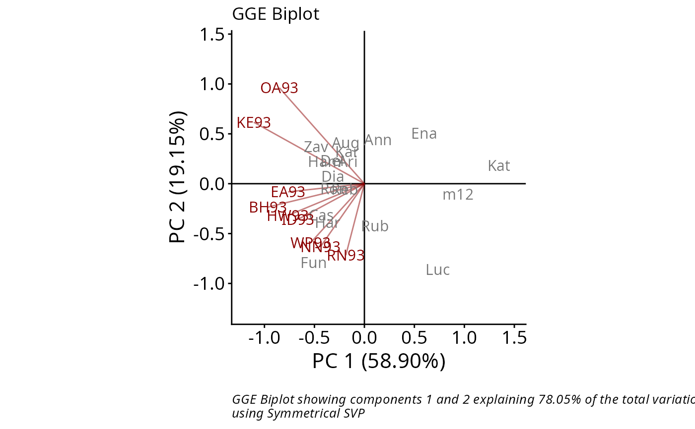
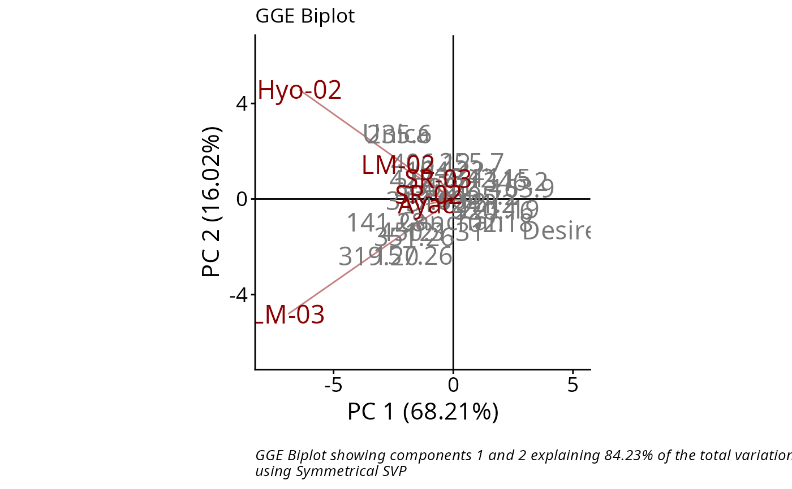

GGE biplots are used for visual examination of the relationships
between test environments, genotypes, and genotype-by-environment
interactions. `rSREGPlot()` produces a biplot as an object of class 'ggplot',
using the output of the rSREGModel function.
Several types of biplots are offered which focus on different aspects of the
analysis. Customization options are also included. This function is a
modification of the `rSREGPlot` function from the
GGEBiplots package.
Usage
rSREGPlot(
rSREGModel,
type = "Biplot",
d1 = 1,
d2 = 2,
selectedE = NA,
selectedG = NA,
selectedG1 = NA,
selectedG2 = NA,
colGen = "gray47",
colEnv = "darkred",
colSegment = "gray30",
colHull = "gray30",
sizeGen = 6,
sizeEnv = 6,
largeSize = 4.5,
axis_expand = 1.2,
axislabels = TRUE,
axes = TRUE,
limits = TRUE,
titles = TRUE,
footnote = TRUE
)Arguments
- rSREGModel
An object of class
rSREGModel.- type
type of biplot to produce.
"Biplot": Basic biplot."Selected Environmen"t: Ranking of cultivars based on their performance in any given environment."Selected Genotype": Ranking of environments based on the performance of any given cultivar."Relationship Among Environments"."Comparison of Genotype"."Which Won Where/What": Identifying the 'best' cultivar in each environment."Discrimination vs. representativeness": Evaluating the environments based on both discriminating ability and representativeness."Ranking Environments": Ranking environments with respect to the ideal environment."Mean vs. stability": Evaluating cultivars based on both average yield and stability."Ranking Genotypes": Ranking genotypes with respect to the ideal genotype.
- d1
PCA component to plot on x axis. Defaults to 1.
- d2
PCA component to plot on y axis. Defaults to 2.
- selectedE
name of the environment to evaluate when `type="Selected Environment"`.
- selectedG
name of the genotype to evaluate when `type="Selected Genotype"`.
- selectedG1,
name of the genotype to compare to `selectedG2` when `type="Comparison of Genotype"`.
- selectedG2,
name of the genotype to compare to `selectedG1` when `type="Comparison of Genotype"`.
- colGen
genotype attributes colour. Defaults to `"gray47"`.
- colEnv
environment attributes colour. Defaults to `"darkred"`.
- colSegment
segment or circle lines colour. Defaults to `"gray30"`.
- colHull
hull colour when `type="Which Won Where/What"`. Defaults to "gray30".
- sizeGen
genotype labels text size. Defaults to 4.
- sizeEnv
environment labels text size. Defaults to 4.
- largeSize
larger labels text size to use for two selected genotypes in `type="Comparison of Genotype"`, and for the outermost genotypes in `type="Which Won Where/What"`. Defaults to 4.5.
- axis_expand
multiplication factor to expand the axis limits by to enable fitting of labels. Defaults to 1.2.
- axislabels
logical, if this argument is `TRUE` labels for axes are included. Defaults to `TRUE`.
- axes
logical, if this argument is `TRUE` x and y axes going through the origin are drawn. Defaults to `TRUE`.
- limits
logical, if this argument is `TRUE` the axes are re-scaled. Defaults to `TRUE`.
- titles
logical, if this argument is `TRUE` a plot title is included. Defaults to `TRUE`.
- footnote
logical, if this argument is `TRUE` a footnote is included. Defaults to `TRUE`.
References
Yan W, Kang M (2003). GGE Biplot Analysis: A Graphical Tool for Breeders, Geneticists, and Agronomists. CRC Press.
Sam Dumble (2017). GGEBiplots: GGE Biplots with 'ggplot2'. R package version 0.1.1. https://CRAN.R-project.org/package=GGEBiplots
Examples
library(geneticae)
# Data without replication
library(agridat)
data(yan.winterwheat)
GGE1 <- rSREGModel(yan.winterwheat)
rSREGPlot(GGE1, sizeGen=4, sizeEnv=4)

# Data with replication
data(plrv)
GGE2 <- rSREGModel(plrv, genotype = "Genotype", environment = "Locality",
response = "Yield", rep = "Rep")
rSREGPlot(GGE2, sizeGen=4, sizeEnv=4)
